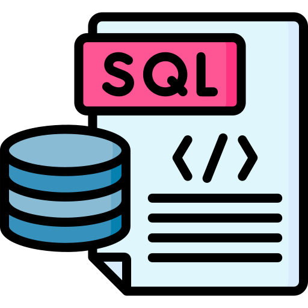
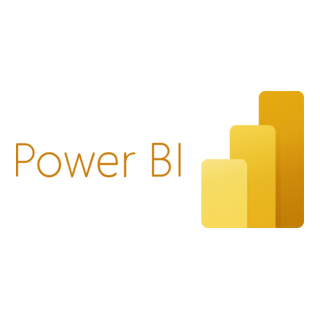
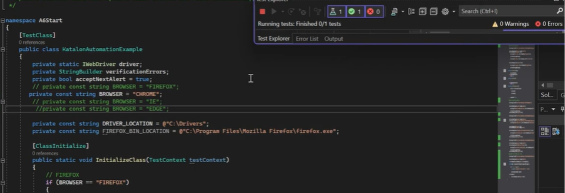

About Me
I am a Computer Science (Data Science) student at Ontario Tech University with a Diploma in Software Support from Mohawk College. I am passionate about data analytics, technology, problem-solving, and finding practical ways to improve systems and processes.
I am a Computer Science (Data Science) student at Ontario Tech University with a Diploma in Software Support from Mohawk College. I enjoy working with data and technology to understand problems, find patterns, and develop practical solutions that improve systems and processes.
During my co-op at Evertz Microsystems, I analyzed system logs and configuration data, supported internal dashboards using JavaScript and JSON, tested virtualization platforms, and documented technical issues and processes. This experience strengthened my analytical thinking, problem-solving, and ability to communicate technical information clearly.
Through my academic and personal projects, I have worked with SQL, Python, Excel, Power BI, JavaScript, HTML, CSS, Bootstrap, and software testing. I enjoy taking a problem, working through the data or system behind it, and turning what I find into something useful and understandable.
I am particularly interested in data analytics, business and systems analysis, software testing, and technical problem-solving, with an interest in applying these skills to improve decisions, products, and processes.
Education & Certifications
Bachelor of Science – Computer Science (Data Science)
Ontario Tech University | Oshawa, ON
Expected April 2029
Relevant Coursework: Intro to Programming (Python), Scientific Data Analysis, Statistics & Probability for Physical Science, Object-Oriented Programming, Data Structures, Technical Communications
IBM Data Analyst Professional Certificate
IBM | Coursera
In Progress
Diploma – Software Support, Computer Systems Technology
Mohawk College | Hamilton, ON
December 2024
Relevant Coursework: Database Theory, Software Quality and Testing, Computer Training & Technical Writing, Object-Oriented Systems, Cloud Computing
Skills

SQL
.png)
Python
Excel

Power BI
.png)
JavaScript
.png)
HTML
.png)
CSS

Java
.png)
Linux
.png)
Git

GitHub
Projects
Sales & Profitability Analysis
- Purpose: Analyzed 9,994 Superstore records to understand sales and profitability patterns.
- Built with: Excel, Python, SQLite, SQL, and Power BI.
- What I did: Cleaned and validated the data, analyzed profitability using SQL, and built an interactive Power BI dashboard.
- Key finding: Identified a significant drop in profit margins beyond a 20% discount threshold.
- Takeaway: Learned how data cleaning, SQL analysis, and visualization can turn a large dataset into useful business insights.

Web Application Testing
- Purpose: Tested a web application across multiple user scenarios to identify functionality, usability, and performance issues.
- Testing: Black-box and grey-box testing using Selenium IDE.
- What I did: Created and executed test cases, investigated defects, and compared actual behavior against expected results.
- Takeaway: Strengthened my ability to approach software systematically, identify issues, and document findings clearly.

Portfolio Website
- Purpose: Built a personal portfolio to present my education, technical skills, projects, and experience.
- Built with: HTML, CSS, Bootstrap, and JavaScript.
- What I did: Designed a responsive layout with structured sections, project cards, navigation, and visual content.
- Takeaway: Learned how to organize technical information into a website that is easy to navigate and understand.
Café Website
- Purpose: Created an online presence for a café to share its menu, activities, and promotions.
- Built with: WordPress, HTML, CSS, Bootstrap, and JavaScript.
- What I did: Designed and organized responsive pages with multimedia content and simple navigation.
- Takeaway: Learned to balance visual design, usability, responsive layout, and content organization.
Contact